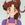

|

Bean Bandit
Author of 6 Stories |
**Author's note: Spoilers for the first TM Manga storyline! **
Disclaimer: Anime...the final frontier. These are the characters of the Manga Queen Rumiko Takahashi (And the guy who created Tenchi) Their continuing mission...To act out a story I have written...
Whoops! Sorry about that! Lost my mind for a second. But that's OK for me, because I am a WILD AND CRAAAAZY GUY!
A Ranma ½ / Tenchi Muyo fanfiction
No Need For A New Start!
Chapter Six: Horsing Around
Kizuato looked out at the passing starscape with a muted hiss of frustration. The shuttle he'd stolen was a recent model, one of the very fastest. However, to the impatient Felinoid, it felt as though he could be making better time by getting out and running alongside the ship. He bared his fangs in a warrior's grin. It had been a long time since he had tasted true combat, which was the likely source of his irritation. No matter how quickly he arrived, it was likely not to be soon enough.
With a few controlled taps of his enormous paw-like hand, Kizuato set the shuttle on autopilot. Perhaps the trip would pass more quickly if he occupied his mind with other things. Easing his enormous bulk from the cockpit and headed into the small cargo bay. He stepped over the body of the pilot he'd killed and sniffed as he did so, looking down. A wrinkle of distaste crossed his muzzle. Perhaps it was time he disposed of the remains. The body was fairly odious at this time, especially by the standards of his sensitive nose.
Gingerly, he picked up the body, being careful to keep his fur clear of any fluids that had not congealed by now, and carried it to the airlock. Not even stopping to glance at the face of the casually slaughtered pilot, he tossed the corpse into the airlock and sealed the hatch. He turned away as the muted swoosh from the other side of the door signified the ejection of the unwanted waste. The giant catlike being continued on into the recesses of the ship, intent on beginning meditation in preparation for the upcoming battle...
Ranma sighed, looking up at the forest canopy high overhead.
"Sorry," He mumbled.
"What for?"
The response from his companion seemed to take him by surprise. He turned to look at Washu. He smiled ruefully at the surprised look on her face.
"Heh. I'm sure ya got better things to do than listen ta me talk about stuff like this," he replied.
Washu smiled back. There was an oddly comforting quality, Ranma decided, in her eyes. At least when she was being serious, like she was now.
"It's not a problem." she assured him, "Don't be silly,"
Ranma nodded, and returned his gaze to the trees overhead.
"I feel kinda stupid," he admitted, "getting all worked up about that. It's just...I dunno. Ryoga's never been the type to talk things out, but I really thought he was my friend."
"It's not stupid, Ranma. He wasn't making any sense. It's his fault, not yours."
Ranma blinked and returned his eyes to Washu. At that moment, a stray beam of sunshine streaked through the trees to illuminate her. As her hair shone in the sunlight, Ranma's breath caught. She's...really pretty.
Blushing, he looked at the ground. "I dunno." He said after a moment. "Ryoga...He might have a point. I'm kind of a trouble magnet. Whenever I get involved in something, it tends to get messy..."
Washu smiled impishly. "We have something in common, then!"
Ranma frowned.
Washu rolled her eyes at this. "Ranma...Seriously, you have to learn to look at all this with a sense of humor. Doesn't any of it strike you as sort of funny? Like the expression on his face when you wrecked his umbrella?"
Ranma smiled grudgingly at that, remembering Ryoga's dumbfounded look. "Yeah, that was kinda funny..."
"There you go!" said Washu delightedly. "Exactly! I know it wasn't fun to go through that, but the problem was on his end, not yours. You have to look at the funny things, otherwise you'll go nuts."
Ranma frowned. "How do you know the problem was on his end?"
Washu shrugged. "He mentioned that you'd cost him two women he cared about. It sounded like he was depressed, and wanted to take it out on someone. The fact that he found you was just a fluke."
Ranma grew thoughtful. "Jeez. If that baka blew it with Akari...well, maybe. Why are all of my friends like that, though? Everyone wants something from me! Take the blame, or marry them, or get beat up! Why does this always happen to me?" he grumbled, frustration creeping into his voice.
"Ranma..."
"Maybe it's my curse. Everything bad seems to have happened after that. No, wait, Oyaji was sellin' me off before that...I guess I'm just a freak..."
Washu laughed quietly. "Ranma, why are you so convinced that there's something about you that makes you more freakish than me? Or my daughter, a two thousand-year-old space pirate? Or your cousin, the newly discovered heir to the throne of an interstellar empire?"
Ranma grinned ruefully. "Heh. Gotta stop feelin' sorry for myself," he acknowledged. "It's just..."
"What is it?"
"My fiancée." Ranma said quietly. "I keep comin' back to Akane. I think...I loved her, before. I dunno. I mean, the damn panda engaged us, it wasn't my idea. Still, I eventually sort of warmed up to the idea, ya know? I mean, I even killed a god to save her life! But it wasn't enough. Nothing changed, and after awhile, I didn't feel the same way I did before, but I can't shake the feeling that it was my fault. I don't know what I did wrong. I did so much, and she still didn't...I just keep coming back to what might have been. And it kinda hurts." he admitted. He paused, and for a long moment there was silence.
Washu drew in a sharp breath.
"I was married before, you know." she said.
Ranma stared. He wanted to say something, but his mouth had seemed to stop working...
"I met him while I was at the Science Academy - that's a school where I taught for awhile. We were so in love...I was really happy." Washu paused for a moment, smiling, as her eyes began to shine with unshed tears. "It got even better. We had a baby together; a little boy...I honestly didn't think life could get better. But then, my husband, he was from a rich family. His family didn't approve of me. I was 'beneath' his social standing. I had...'inadequate ancestry'. Eventually, his family got their way. My husband, and my baby, were taken from me."
Ranma's eyes widened. "Aw, no," he breathed in disbelief. Washu nodded, looking briefly at him, and for the first time, Ranma saw the torment in Washu's verdant gaze before she looked down at her feet.
"Yes," she said quietly. "That was why I used my young body most of all. Ancestry…lineage. Adults are cruel. I would rather live as a child than experience something like that again."
"But...That's not right! How could they DO that!" Ranma was outraged, forgetting his own depression for the moment.
Washu looked up, smiling wanly.
"You are something special, Ranma-kun. But, you're right. It was cruel to punish me for something that wasn't my fault. But you're punishing yourself for something that isn't your fault either. I know it hurts, sometimes so badly you can hardly stand it," Washu said softly, "but it isn't your fault."
"Everyone always says it is," he returned sourly.
"I don't."
"Um. Yeah, but...You know what I mean."
Washu nodded as she blinked away the unshed tears. "Yes, but think about this. A long time ago, everyone used to say the earth was flat. Did that make them right?"
"I guess not."
"You don't sound convinced," Washu noted, smiling slightly.
"I've lived the past two years bein' blamed for everything right down ta my pop's athlete's foot." Ranma sighed. "It never bothered me before. I dunno what's wrong with me."
Washu shook her head. "Nothing is 'wrong' with YOU, Ranma. It's what's wrong with them that's the question. No one should have to be put through that. It won't happen here, Ranma. Give us a chance. Ryoko used to be a space pirate, and no one blames her for all the bad things that happen here."
Ranma grinned shyly. "I know. It's just...this is a little new to me, y' know? Everyone's been great, and I'm sorta waiting for the other shoe ta drop."
"Ranma...unless you learn to relax, you'll ALWAYS be waiting for the other shoe to drop." Washu chided him gently. "It's just not worth it. You can't take responsibility for everything that happens. If people tell you otherwise, ignore them. They're wrong-it's impossible for any one person to be responsible for everything around them."
Ranma sat silent at that, considering.
"Does that make you feel better?" Washu asked tentatively, after a moment.
Ranma turned to Washu and gave her a small smile. "Yeah." he said uncertainly at first, but gaining confidence. "Yeah it does. Thanks, Washu,"
"You're welcome. I'm glad it helped," Washu said quietly, brushing absently at her wild red hair.
"Yeah, it did." Ranma admitted. "Nobody ever listened to me before," he confessed.
"How could you stand living like that?"
"Wasn't really all that bad," He responded. "Whenever I felt really down, I'd sit on the roof of the dojo an' watch the stars. It always made me feel better."
Washu smiled at this.
"You can still do that here," she suggested. "And maybe we could do it together, hmm?"
Ranma blinked at the suggestion. Her tone was...suggestive, but she was grinning. Teasing him. The realization lifted the remains of his moodiness. He laughed.
"No funny stuff, though," he warned, still smiling.
"Oh, pooh. You're no fun." Washu mock-pouted.
Ranma grinned. "Thanks, Washu-chan. I do feel better."
Washu blushed at the unexpected endearment. "You're welcome, Ranma-kun. Happy to help," she murmured, looking away. Ranma blinked in confusion. He was getting better, but guessing what girls were thinking was still way out of his league. He remembered that Akane never met his gaze when she was upset with him, though. Had he done something wrong?
Washu looked up at Ranma's nervous glance.
"What's the matter?" she asked curiously.
Ranma chuckled sheepishly, scratching at the base of his pigtail.
"Ah...Heh. Gomen. I'm still kind of an idiot about people, ya know? I say stuff before I really think, and I'm never sure when I've stuck my foot in my mouth. I thought...Gomen," he finished, lamely.
Washu nodded lightly, smiling. "That's fine, Ranma. Don't worry. I'm not upset."
"Ah...right. So you're not mad or nothing?"
Washu nodded. "Not at all," she assured him, and suddenly an impish look crossing her features. "In fact, quite the opposite," she leered, a positively hungry look appearing on her face.
Ranma's brain went into panic mode instantly. He let out a startled 'eep' and made warding motions with his hands. How had this happened again? He wasn't prepared to deal with this! A small voice in the back of his head piped up that Washu's sentiments were obviously not one sided, judging by 'other' physical reactions, but it was ignored in favor of full-scale panic.
Washu blinked in surprise, then cursed to herself. His father was really going to get his someday, she vowed silently. She quickly held up her hands in calming gestures.
"Ranma, relax! I'm sorry," she said quickly. Ranma stopped panicking for a moment, but stayed ready to bolt at a moment's notice.
"Eh?" he said intelligently.
Washu smiled soothingly. "I'm sorry," she said again. "I was just teasing."
"So, just kidding?" he asked, relaxing marginally.
Washu regarded him a moment, wondering how to phrase her reply. She didn't want to scare him away, but she had no tolerance for the sort of awkward 'what is he thinking?' two-step of sexual tension that seemed to pervade the relationship between Ryoko, Ayeka and Tenchi. She decided to be as straightforward as she could and hope for the best.
"No." she replied, biting her lip pensively. Ranma tensed, but he didn't bolt.
"Uh...what do you mean?" he asked tentatively.
Washu grinned slightly, encouraged.
"Ranma...I know you're used to people wanting things from you. I'd be lying if I said I wasn't interested in you THAT way."
Washu noted that Ranma's apparent stress level was rising rapidly. "It might seem like the same thing, but it's not. I like you." She said quickly, blushing, a little embarrassed at the confession. "I haven't 'liked' anyone in a long time...I know it's hard for you, so I can wait. But, maybe...?" Washu trailed off, looking at him hopefully.
Ranma took in the statement calmly. His first inclination was to shy away from anything related to girls. He just didn't know how to handle them. Akane was a perfect example. Maybe Washu was right, it wasn't his fault...entirely. Still...
On the other hand, Washu was a little different than the fiancées he'd left behind. She was as straightforward as they were, but she hadn't demanded a wedding. All she was asking for was a chance. Really, he reflected, what was wrong with that? It would be nice to have someone like Washu to talk to. Plus, he couldn't deny that being around her gave him a peculiar, warm feeling inside. He nodded to himself. This is too confusing. I mean, she's real pretty and all, but why would she want me? Gah! This is getting' complicated. Still, she's been real nice. She wouldn't be like that if she was just after getting' married, would she? I gotta say something though...
"Um, I guess. Dunno why you'd pick me, though." he said guardedly. If there was any doubt that this was a good decision, it was completely washed away by the sunny smile on Washu's face. The redheaded scientist suddenly hugged him.
"Thank you, Ranma. It means a lot to me."
"Um...You're welcome?" Ranma said tentatively as he blushed a little from the hug, but it wasn't an "I've got you now" glomp, it was a warm and honest token of affection. Huh. Different. I could get used ta this, he thought, returning the gesture timidly. Ranma looked up, distracted, as he heard an energetic yell echo through the trees.
"What's that?"
Washu looked ever so slightly disappointed as they parted. "I imagine Tenchi-dono is getting more lessons," she said, grinning a little.
"Oh, yeah? I didn't really get to see 'em fight the other day. How good is Tenchi?" Ranma asked, interested.
Washu shrugged. "I'm not sure. Let's go watch them," she suggested.
"Sure," Ranma nodded, standing up. Washu did the same, and they headed off in the direction of the sounds of fighting.
The air in the small wooded clearing resounded with numerous impacts of wood on wood, finally ending with a resounding thump and a muffled groan. If one were to look closer, the noise appeared to be coming from one of two men. The first was an older gentleman, clothed in the robes of a Kenjutsu sensei. He was silently observing the other a much younger man, clad in a simple but serviceable tunic and trousers, who was currently facedown on the ground. The older man, Yosho, grinned.
"You're not concentrating, Tenchi," He chided.
Tenchi pulled his face up from the ground with a grimace.
"How can Ranma make this kind of thing look so easy?" he complained. Yosho's face took on a serious expression.
"Why are you asking? Ryoko has a great deal of fighting ability, yet you've never compared yourself to her," he pointed out.
"I never really believed a human could do that sort of thing before," Tenchi admitted. "Ryoko can fight really well, but she isn't human. I thought that was why she was so good at it..."
Yosho shook his head. "Ryoko is talented, but her ability doesn't stem from her genetics," he said reasonably, "nor is it training, as in Ranma's case. She has simply been fighting for a large part of her life, and the experience has served her well."
"But what about Ranma?" Tenchi asked.
"Ranma," said Yosho slowly, "has been raised with the martial arts as the focus for his life. To the exclusion of nearly all else."
Tenchi grinned. "You can sort of tell that, Grampa." he said dryly.
Yosho nodded.
"That is true. However, you can also tell that he has a passion for his art. This is what allows him to excel, Tenchi."
"So...I have to like to fight to be as good as he is?"
Yosho smiled inscrutably. "Perhaps you should ask him that question." Yosho let his grandson ponder that point for a moment, then raised his own bokken. "Let's continue your training."
Tenchi nodded as he raised his bokken in a ready stance. His grandfather did the same. A long moment passed between them, with no further motion save the leaves on the surrounding trees rustling in a slight breeze. On some unspoken signal, Tenchi charged.
"KIYAAA!" the young prince shouted as he charged his grandfather, bokken raised. The two met in a flurry of blows, neither penetrating the other's defense. A final slash came from Yosho, which Tenchi promptly blocked. It set him off balance, though, and he leapt backwards, and his grandfather did the same. Tenchi watched warily, looking for another attack. However, he was taken completely by surprise as the older man disappeared in a blur of motion.
"Eh?" Tenchi exclaimed, alarmed. "Gone! But—," He looked around hurriedly for his missing teacher. He saw no sign of him though. His confusion was brushed aside as he heard a familiar voice behind him.
"Hello."
Without conscious thought, Tenchi's wooden sword blurred into motion, coming to rest across his back, braced on his other arm, scant moments before the overhead strike impacted with the improvised block, denied it's target of Tenchi's shoulder. The two men leapt apart again, Tenchi breathing heavily from the shock of the near hit, and Yosho smirking slightly. They each rushed to the attack again, bringing their swords together. As they struggled, Yosho smiled over the crossed swords at his grandson.
"You're finally learning," he said commented placidly. "Eh, Tenchi?"
Tenchi grinned. "Pretty good, Huh?" He blinked in surprise, as his grandfather was no longer before him.
"Hello."
Tenchi began to turn at the sound of the voice, but this time, he wasn't fast enough. Yosho's bokken impacted his head, accompanied by a sharp spike of pain.
"Fooled you!" Yosho chuckled.
"Ite! That's cheating, old man!" Tenchi began to protest, but stopped short as he heard the sounds of footsteps approaching. Wiping his forehead with his sleeve, he glanced down the path to see two people heading his way. "Oh! Hi there, Ayeka, Sasami-chan!" he greeted cheerfully.
Sasami smiled sunnily at him and waved as she approached. The elder princess looked up as he called out, her cheeks coloring slightly.
"H-Hello, Tenchi-sama," she replied. Tenchi blinked, then smiled nervously in return, turning away uncomfortably as quickly as he could without being rude. He knew that look. It usually meant that Ryoko would pop up in a few moments, and he didn't want to give either one a reason to start a fight.
To his surprise, when he looked back to his grandfather, Mihoshi was already there, pouring Yosho a drink from a steaming thermos. Jeez! Tenchi thought with amazement for what must have been the umpteenth time since the women from space had taken up residence at his home, They're everywhere! Oh well, my head could use the break, I guess. He mused idly, rubbing the latest grandfather-inflicted lump on his abused cranium.
Ayeka looked up as they walked toward where Yosho and Mihoshi were, putting her hand to her mouth in surprise.
"I didn't expect Mihoshi to be here," Ayeka murmured. The blond GP officer smiled brightly.
"I was watching Tenchi work out!" she chirped. "He's soo muscular, you know."
Tenchi smirked. "I take after Gramps here,"
Yosho simply raised an eyebrow. "'Gramps' here can still whip your butt, Tenchi."
Tenchi grimaced and rubbed at the goose egg on his head from the sparring session. "No kidding."
Yosho chuckled as he turned to the older of the two princesses' at Tenchi's side. "What's that you've go there, Ayeka?"
Ayeka, watching the conversation, seemed startled at being addressed. "Oh! I'd forgotten," she said demurely, glancing down at the bento in her hands. "I hope you haven't eaten. I brought some snacks..."
All was suddenly stilled in the clearing as Yosho and Tenchi both froze. Ayeka noted the change and speared the two men with a baleful glare that was in direct contrast to her cheerful mood a moment before.
"And what are you afraid of, hmm?" she asked icily.
"Umm...Nothing," Tenchi assured her quickly, examining the food. It looks ok... but if Ayeka made it... he thought nervously.
"I'll try one!"
Tenchi turned to face Mihoshi as she spoke, not believing his ears. The blond detective had already grabbed some of the proffered bento with her chopsticks and popped it into her mouth. He started to grab for the tea to help her keep the food down when Mihoshi gasped and put a hand to her cheek.
"Are you all right, Mihoshi?" he asked urgently.
"It's SO delish!" she gushed.
"Really?" Tenchi asked in amazement. "You're sure?"
"Tenchi!" Ayeka wailed in dismay.
"Ah! Heh, Just kidding!"
Upon Mihoshi's surprising revelation, everyone began reaching for the food. The little picnic began as everyone complimented Ayeka on the food, and Ayeka blushed modestly as she accepted the praise.
Yosho grinned. "Have you been secretly practicing, Ayeka? You used to confuse salt with sugar."
As Ayeka smiled thinly in reply, Tenchi leaned down to Sasami who was sitting next to him.
"... She did?"
There was no humor in Sasami's weary nod.
"Uh huh."
After that, they ate in silence for a few moments, then Mihoshi turned to Ayeka and smiled.
"This one is especially scrumptious," The blond woman enthused. "You must share your recipe!"
Ayeka stiffened. "Um. Well, that is..."
The Juraian princess stammered for a moment while everyone watched until the sound of someone approaching through the nearby brush caught the attention of the group. After a moment, Ranma and Washu emerged.
"Oh, I guess they're done, practicin'..." Ranma noted with a little disappointment. "Hey, a picnic! All right!"
Washu laughed as Ranma eagerly headed for the group with her in tow. He grinned at her over his shoulder, a little sheepishly. They joined the others and they all sat down to eat.
The picnic had proceeded peacefully, more or less (discounting Ayeka's futile attempts to get Ranma to eat with more decorum)... At least until Ryoko had arrived. Her casually seductive greeting to Tenchi was met by a heated retort from Ayeka, and Ryoko responded in kind. It seemed for a moment that they were about to attempt to injure each other, when Ranma, used to such occurrences, turned to Sasami.
"Tastes great, imouto-chan," he said around a mouthful of pickled skipjack. He gave Sasami a wink and a thumbs-up.
"Um, Saotome-san, Miss Ayeka made these bento..." Mihoshi began confusedly. Ranma shook his head.
"Naw, it was Sasami. I can tell."
In unison, everyone's gaze turned to rest on Ayeka, who was rapidly turning bright red. Sasami giggled as Ayeka fixed Ranma with a glare that could blister paint.
Ranma blinked in surprise at the ire he was recieving. "Huh? 'Smatter, Ayeka?"
Washu stifled the urge to laugh as Ayeka glowered. Ryoko was not nearly as restrained, and began to chuckle. Ayeka turned and opened her mouth to deliver a scathing insult when Tenchi stepped deftly between them, proffering a snack from the bento.
"C'mon, Ryoko, try some. It's good!" he said cheerfully.
"Well," Ryoko said smugly, allowing Tenchi to defuse the coming fight, "A nibble of Sasami's cooking shouldn't hurt..." She trailed off for a moment, stopping in mid-grab. "Eh? Ryo-Ohki?"
That got everyone's attention. They all turned to look at the cabbit, who, unnoticed until now, was sitting beside Mihoshi in her toddler form. She was staring at the sky intensely, when suddenly, she let out a low, sibilant hiss. Ranma tensed, but managed to keep his composure. The sky flashed with light in the distance, and the sound of a rapidly approaching object could be heard.
Ranma's danger sense flared, and he jumped to his feet, noticing out of the corner of his eye that Yosho had done the same. In a blur of motion, the object dropped from the sky hard enough to make the ground shake, and kicked up a large cloud of dust with a resounding boom. Tenchi got to his feet along with the rest of the group.
Ranma stared into the dust cloud. "There's someone in there...the ki is... Hey, I recognize-" he began. Just then the breeze started to clear the dust away, revealing a silhouette that was all too familiar.
Tenchi gasped.
"No way..."
For all anyone could see, The person stepping into view was identical to Ryoko, save that she was dressed in a pecuiliar jumpsuit, slightly more stylized than Ryoko's current blue and pink 'elf' outfit. She advanced on the group slowly, hovering inches above the ground.
"You..." She said slowly, turning to Tenchi. "You are the one who did Kagato in, aren't you!"
Ranma watched as Tenchi shifted uneasily. He just KNEW this was going to be trouble.
Nodoka and Nabiki faced the steep hillside in dismay, suddenly very conscious of Nabiki's injuries.
"Oh, great." Nabiki sighed. "Why can't anything ever be easy?" Nodoka smiled gently and escorted the injured girl to a fallen tree nearby to rest a moment. Nabiki smiled gratefully and eased herself into a sitting position. "Thanks, Auntie."
Nodoka nodded. "I'm sorry, Nabiki-chan. I'd forgotten it was such a difficult hike. We should have waited until you had a chance to grow stronger..."
Nabiki shrugged tiredly. "That's all right, Auntie. If it isn't one thing, it's another. Can we sit for a while though?"
Nodoka smiled apologetically. "Of course." She was about to sit next to Nabiki when there was a whistling sound, followed a few moments later by a loud boom, rocking the clearing.
Nabiki grabbed at the log she was sitting on to keep her balance as the earth shook. "Of course, going to find out what's going on would be good too," she added dryly.
Nodoka gave her a concerned glance. "Are you sure, Nabiki-chan?"
Nabiki looked up at the older woman slowly, as a rueful grin spread across her face. "Not really. But I'll be kicking myself later if I don't at least get to see what's Ranma-kun's gotten himself into this time,"
Nodoka smiled ruefully. "True. Let's go then, shall we?"
The two women slowly began making their way up the hillside to the Masaki shrine.
"Are you...Are you really Ryoko?"
Tenchi's hesitant question to the newcomer hung in the air a moment. Ayeka turned to Ryoko, irritation written all over her face.
"So who is she? Some long lost relative?" The princess sneered.
"How the hell should I know who she is?" Ryoko shot back. Ranma suppressed a twinge of nostalgia as he listened to them bicker. It looked as though they were going to start fighting when Ryoko's doppelganger spoke again.
"I'll ask you one more time," she smirked, addressing Tenchi, "YOU killed Kagato, didn't you? 'Fess up! I'm right, aren't I?"
Ranma glanced at his cousin, who was staring at her, trying to decide what to say. He was about to intervene when Ryoko stepped forward.
"Cool it, beautiful," The space pirate said lazily, soaring into the air. She stood in midair, nose to nose with her double. "Who...or what...are you? You're ruining our picnic."
"..." said the doppelganger.
Ranma watched for a moment. This had all the earmarks of an impending fight. He stared hard at Ryoko's lookalike. The resemblance was scary. She looked EXACTLY like Ryoko, right down to the last detail, save for a diagonal slash on either cheek.
"Washu," he murmured to the girl sitting beside him, "This doesn't look good...Everyone should start moving back."
Washu blinked, then nodded after a moment, stepping away from the group, gesturing for Sasami and Mihoshi to follow, summoning her astral computer at the same time. Yosho did the same. As they did so, the intruder spoke to Ryoko.
"You are obstructing me." With no further warning, Ryoko was knocked backwards by a devastating punch, flying headlong into a tree. Said tree was not capable of withstanding the assault and promptly broke in half, landing on top of the hapless space pirate.
Washu groaned. "She can be SO impulsive,"
"Ryoko-neechan!" cried Sasami, rushing to Ryoko's aid, trailed by Mihoshi.
"Ite." groaned the woodpile.
Tenchi whirled on Ryoko's lookalike.
"You can't just attack who ever you want!" he shouted.
"I am not programmed to discuss such things," came the ominous reply. "NOW! Time to fight!" she said, summoning an energy sword which, in contrast to the resemblance was oddly different than Ryoko's.
She lunged at Tenchi, intent on doing damage. Tenchi leaped backwards to avoid the intended hit, but she never made it to her destination, as she was intercepted by a sizzling blue ki blast and an angry shout of "MOKO TAKABISHA!" The blast intercepted her along her flight path and sent her flying into the trees. Ryoko's double burst out of the trees almost as quickly as she went in and angrily looked for her attacker.
"Who did that!" she snarled.
Ranma smirked and turned to face her, assuming a defensive posture.
"I did. I dunno what you want with Tenchi, but attacking an unarmed man with a sword ain't good manners."
"As if you should be giving lectures on manners," huffed Ayeka quietly. Tenchi turned to her with a shushing gesture, watching as his cousin intervened in what should have been his fight. He frowned to himself, wondering if he should stop Ranma, but ultimately decided to stand back for the moment.
Ranma and the intruder faced each other silently for a moment. Suddenly, she raced toward him, sword raised. Ranma watched her approach, then at the last moment, blurred into motion. He dodged the wild sword strike, but as he did, he felt a slight heat near his chest.
"Ranma! Be careful!" Washu shouted, alarmed. Ranma looked down. A rather long, shallow gash had split one of the seams of his Chinese shirt.
"Hey!" Ranma protested angrily, "I liked this shirt!" Hmm. A little faster than Ryoko...and she has a cleaner technique. Ryoko's technique is mostly self taught, so someone musta trained this one.
Ryoko's double frowned. "You aren't what I'm here for. Stop interfering, and I won't have to kill you."
Ranma grinned. "Uh-uh. You smacked Ryoko for no good reason, and now ya wanna beat up my cousin? Nothin' doin'. I'm your fight." He assumed a loose defensive stance, smirking confidently.
Tenchi's brow creased in concern. "Ranma, are you ok with this? I mean, you already had that fight this morning-," he asked worriedly.
Ranma smiled easily at Tenchi. "Yeah, but this'll be a good stress buster," He replied glibly. "She looks tough. Should be fun."
Tenchi blinked, but nodded and moved back a few paces. Yosho caught his eye and tossed something to him. As the object landed in his hand, Tenchi realized what it was. Tenchi-ken. Grampa's not taking any chances, he observed. Better watch out.
Ranma almost laughed as she flew toward him again, fast enough to blur slightly. Man, she's not much of a technical fighter, is she? He was able to dodge her attack cleanly this time, however. She pulled to a stop behind him, and turned slowly, mild surprise on her features.
"That attack was faster than my last, but this time, I was unable to connect," she commented.
Ranma raised an eyebrow. "Ya ready to start takin' me serious now?"
"All right, let's FIGHT!" she said as she rushed to the attack.
Washu frowned, glancing up from her computer. "I wish he'd stop doing that," she said quietly.
Yosho tilted his head. "Hmm?"
"He's not taking it seriously." Washu sighed. "He could get hurt."
"Fretting is unlike you, Washu-san."
Washu snorted. "Fat lot you know. I always worry about Ryoko's fights. I just don't say anything."
"Perhaps you should. It might help alleviate some of the tension between you," Yosho observed.
"I doubt it. Ryoko's the stubborn sort."
At this, Yosho snorted. "I hadn't noticed," he said dryly.
Washu chuckled, her eyes never leaving the battle. Ranma was matching his attacker's speed, occasionally tossing in a hit or recieving a glancing blow, but mostly just laughing at her. "What is he doing?" she exclaimed nervously after a particularly near miss on the part of Ryoko's double.
Yosho smiled. "Calm yourself. He's simply taking her measure. Probably gauging the differences between Ryoko's fighting style and hers. It will get...serious in a moment."
Washu shot him an irritated look. "I know, I know. I do have a little experience in this area, myself, you know..."
"So you do. You're still worried, though."
Washu nodded. "Point. Can he win?" She asked nervously.
"Shouldn't you be the one to tell me that?"
"The answer to the question is no," Washu said wryly. "However, if you had asked me if he could beat Ryoko, even half blasted out of her mind as she was, I would have said the same thing."
Yosho grinned, giving her a meaningful look. "He does have a way of defying the rules, doesn't he?"
Washu smiled softly. "You have NO idea."
Ranma dropped to the ground opposite his opponent. They had tested each other's limits and, to his surprise, she was better than he'd expected. He was unable to stop himself from grinning as he noted his opponent didn't even appear strained. She's good. Almost as good as Ryoko and a little bit more powerful. How do I pull this off?
"Are you finished?" Ryoko's double asked, smirking a little.
"Heh. Why? Ya tired already?" he shot back.
His opponent actually laughed at that. "Get ready to die."
Ranma's grin grew wider as he reached again into his bag of tricks. He knew his father wanted the Umisenken sealed, but he hadn't actually made Ranma promise to do so. Even so, Ranma rarely used them, preferring to rely on his regular techniques, rather than an art originally designed for theft. Still, what with his opponent's superhuman abilities, this could help even out the power difference. He assumed the stance for the Umisenken, beginning to use his battle aura to blur his physical presence.
His opponent gaped, and Ranma ignored the startled exclamations of Tenchi and the others.
"Bring it on, lady," Ranma invited tauntingly, a blank expression on his face.
Momentary shock turned to a speeding rush, and Ranma was hard pressed to finish the attack. Using all of his speed, he vanished from his startled attacker's line of sight. "WHITE SNAKE VENOM RELIABLE FIST!" he cried as he reappeared behind her, striking out with the attack at her dead angle. She let out a pained grunt, and Ranma smiled, sure he'd tilted the odds in his favor.
Then her hair exploded in his face.
Not really, of course, but that was what it felt like to Ranma. Hundreds of filament-like needles fired out of the back of her head, straight for Ranma's face. His danger sense gave him a moment warning, and that was all that saved his head as he hurled his arm in the path of the attack.
The needles themselves weren't too damaging, but they broke his concentration long enough for his attacker to locate him and deliver a hard blow to the head, albeit muted slightly by the pain of the injury Ranma had dealt to her. Ranma crumpled to the ground, momentarily senseless.
She staggered over to him, and raised her sword. "You are good. A shame that your potential will be wasted..."
Sasami and Mihoshi tugged at the broken tree lying on Ryoko.
"Oh no," Sasami said pleadingly to the woodpile. "Ryoko, don't die..."
She trailed off as one part of the tree suddenly lifted off the pile of debris, Ryoko's head following.
"Oh good," Sasami exclaimed with no small amount of relief, "You're OK!"
Ryoko expression was a little annoyed, as tilting her head from side to side, cracking her abused neck. She stood up, scattering the fragments of tree trunk.
"Grr. THAT BITCH IS DEAD!" she snarled, drawing in power and preparing to rush to the attack.
Mihoshi winced. "Um. Could you wait for us to get out of the way, first?" she asked timidly.
Ranma shook off the impact as his vision cleared in time to see the woman who looked like Ryoko begin to swing downward with her energy sword. What happened? Dammit, NO! I can't check out like this! As the sword came down he threw up his hands catching his attacker in the chest with a point blank ki-blast.
The blast was hastily gathered and fired, but had enough power to push her backward and him out of danger of losing his head. Tenchi stepped forward, igniting the Tenchi-ken.
"Are you all right, Ranma?"
Ranma stood slowly and nodded. "Yeah," he replied sheepishly. "Didn't take her seriously enough." He stepped forward again, summoning a ball of blue ki, and closing his fist around it. His improvised Ki saber flared to life, and Ranma and Tenchi turned to face the intruder with Ryoko's face. When they both looked to the girl, she smirked, looking at Tenchi. "Heh...not bad...But still, the power of the Light Hawk Sword, long sought by my master, should be much stronger than this."
Tenchi gaped at the taunt, and Ranma looked at his cousin quizzically. The air was still for a moment, then a faint roaring sound could be heard. The three glanced in the direction of the sound, just in time to see Ryoko, practically glowing with fury, slam into her double. Ranma and Tenchi heard Ryoko yell as she flashed by.
"You HURT ME!"
"Yeek!" the girl managed before the momentum of Ryoko's attack carried the two lookalikes away into the distance.
Ranma and Tenchi glanced at each other as they sailed away. They were about to follow when the rest of the group rushed up, Sasami and Washu heading directly for Ranma.
"Ranma-niichan! Are you all right? I was so worried!" she cried.
Ranma blinked as the sobbing girl hugged him tightly, burying her face in his shirt. Blinking, he looked up at Washu, who had stopped her approach and was watching, her head tilted and a funny little smile on her face. His normal bluster died on his lips, as he slowly returned the fierce embrace.
"Ano...I'm ok, Sasami-chan. She just surprised me, ne? Can't beat me that easily." He said, aiming the comment at the redhead watching as well as the little girl in his arms. Washu nodded as Sasami pulled out of the hug, nodding and wiping at her teary eyes with her sleeves.
"I'm so glad," Sasami admitted. A muted cough drew the attention of the three. Yosho stood beside Ayeka, Tenchi and Mihoshi, who were all watching the interaction, smiling. Ranma blushed as Yosho spoke.
"Perhaps we should go check in Ryoko's progress, hmm?" he suggested.
Ranma nodded hurriedly as Washu and Ayeka chuckled. The mood of the moment broken, the group rushed from the clearing in the direction Ryoko and her opponent had taken.
Ryoko streaked toward her opponent, sword in hand. Both of them moving at top speed, they clashed again and again over the treetops. Bright flashes of light marked a trail of the battle through the sky. Ryoko and her twin burst apart after a fiery clash, over the lake next to the Masaki home. Ryoko glanced down at her sword as it began to shimmer weakly.
Her twin smirked. "Heh. You done now?"
"Shaddap!" Ryoko snarled. She pulled her fist back as it began to glow. "Maybe you'd like a taste of...THIS!" Ryoko thrust her hand forward, unleashing a lightning bolt large enough to vaporize a small tree. "Zeus ain't got nothin' on me!"
Ryoko's boast was cut short as the electricity dispersed on the stranger's abruptly erected force shield.
"She stopped-?"
Ryoko's opponent dropped her shield, with the threat gone, smiling nastily.
"Let's see how you like some of your own medicine," she laughed.
Ranma and Tenchi burst through the trees, followed by the rest of the group just in time to see Ryoko's double hit the original with a blast of lightning so intense they were all forced to look away from the blinding light.
When the light cleared, they all saw a limp Ryoko hitting the water of the lake.
"Ryoko!" Tenchi yelled in alarm, watching her drop beneath the surface of the water.
Ranma's gaze, however, was fixed on the sky, where Ryoko's double was building up for another blast. "Kuso! She's gonna kill her!" he swore.
"What?"
"Ryoko-neechan!"
"Ranma, wait!"
This last was from Tenchi, as Ranma dashed away from the group, heading for the dock. All he could do is watch as his cousin dashed away. Tenchi was shocked to note that Ranma had begun to shimmer with a brilliant blue battle aura as he ran.
"Interesting," Yosho noted, from behind Tenchi. "He is much more powerful than I suspected."
"But still not enough to beat her," Washu interjected worriedly. "He's being reckless..."
Washu's comment was interrupted by the release of the blast Ryoko's double had been building. There was a thunderous crash as the electricity smashed into the lake water, dooming the space pirate beneath.
"NO!" Ranma's angry shout echoed over the lake, as Sasami and Mihoshi gasped in horror.
Tenchi watched in surprise as his cousin reached the end of the dock, glaring up at Ryoko's double. Ranma's aura intensified, fiery azure light pouring off him in waves as he pulled his hands together, preparing a ki blast.
A strong pulling from his left hand, however, suddenly diverted his attention. He looked down, and to his amazement, the Tenchi-ken was twitching and squirming in his hand.
"Grampa!" he gasped in alarm, even as the pulling grew stronger. Tenchi reflexively tightened his grip. As he did so, the two red gems in the hilt of the Tenchi-ken began to glow.
Washu and Yosho turned their attention from the confrontation at the dock as Tenchi called out.
The boy had his feet planted in the ground, pulling at the Tenchi-ken with all his might as the sword struggled like a living thing against his grasp. The most astonishing parts of the spectacle, however, were the jewels in the hilt of the master key.
The normally slightly glossy ruby gems were lit from within by a fierce crimson glow. Yosho took in the sight, then glanced at the confrontation on the dock. Ryoko's lookalike had powered up another blast, and was preparing to fire at Ranma, who had finished readying his own ki bolt. As his other grandson fearlessly faced down a being of an order of power far higher than him, Yosho came to an instant decision.
"Tenchi! Let go!" he ordered.
"What?"
"Quickly!"
Tenchi was an obedient boy, and needed no further urging. He relinquished his grip in the Tenchi-ken and the wooden hilt flew from his fingers like a guided missile.
It closed the distance to Ranma rapidly, coming into contact with his battle aura just as the two combatants fired.
As the gems in the hilt of the Tenchi-ken came into contact with Ranma's battle aura, there was a momentary flash from each. Blue met crimson in a silent explosion, and swelled into a single corona of purple light, centered on Ranma himself. The energy permeated Ranma's battle aura, bolstering and expanding it into a sphere of power that blew apart the simple wooden dock he was standing on, leaving him suspended in midair over the water. Within the sphere, the new energy finally bolstered the attack, swirling down his arms and out his hands in a focused eruption of power.
The supercharged Moko Takabisha impacted with the electric blast, but at its new power level, instead of being overwhelmed, the purple beam cut easily through the lookalike's attack, impacting hard with the attacker beyond it. Ryoko's double screamed under the unexpected assault, writhing in pain.
She likely would have died, cooked alive within the attack, if not for an unlikely rescuer.
A blur shot up from the lake, moving at incredible speed to collide heavily with the lookalike, knocking her from the path of the blast as the blast itself seemed to distort around the fast moving object. Seconds later, the blast stopped.
As she was thrown, unconscious, to the ground below, the blur also stopped.
Revealing an unharmed and fiercely grinning Ryoko.
Tenchi gaped. This was all too much to take in. "Ryoko!" he cried in relief. Said space pirate raised her fist triumphantly from midair.
"Hah!" She crowed. "How do ya like that, you cheap copy?" Then she noticed the scene around her. "Huh? What's going on?"
At that moment, Ranma's power gave out. The sphere of purple energy winked out in an instant, dropping the drained teenage martial artist. Ordinarily, this wouldn't be a problem, but since the initial power surge has destroyed the dock he had stood on, Ranma was unceremoniously dropped into the icy waters of the lake.
Tenchi surged forward. "Ranma!" This, he could handle. He kicked off his sandals, pulling off his shirt at the same time, and prepared to dive in to retrieve his cousin, but Ryoko stopped him at the last moment.
"Hold on, Tenchi. I got him."
"Ryoko?"
"Just wanted to see you take your shirt off, that's all," Ryoko said saucily, then winked and dove under the surface of the water. Behind him, Ayeka blushed and began to sputter.
Tenchi reddened as he slowly put his shirt back on.
Nabiki and Nodoka stopped short as they entered the clearing.
"Strange," Nodoka murmured. "I don't remember a house here..." Nabiki looked up curiously, carefully concealing a wince.
"There's some people over there, Auntie," she noted. "Maybe someone can tell us what's going on?"
Nodoka nodded and they made their way to the group. No one noticed the approach of the two women as they were all gathered around a young woman lying prone on the ground, save for a young man standing off to one side who was staring at the lake itself. As they drew near, a small blue haired girl seemed to sense their approach.
"Oh, hello," she said brightly, turning to face them. "Who're you?"
As she spoke, the rest of the group turned. Nodoka was slightly surprised at the variety of the group. Young women of all ages, and hair colors, surrounded an older man in a priest's robe. The older man turned slowly, his eyes widening as he saw Nodoka.
"No-chan?"
"Father..."
The moment stretched on as Yosho and Nodoka gazed uncertainly at each other. The uncomfortable silence was broken by a splash.
A young girl with wild cyan hair had come up from underwater, cradling a small, but very familiar red-haired girl in her arms.
"Ranma!" Nodoka gasped. She ran to the side of the girl who had retrieved her son. The cyan haired girl gave her an odd look, but lay the unconscious girl on the ground.
"She's ok, didn't even swallow than much water." Ranma's rescuer commented. Nodoka knelt down and was relieved to see a steady rise and fall of Ranma's breasts. Nodoka put a hand on her chest, trying to slow the triphammer beating of her heart. A red-haired girl approached as she watched, and quickly and efficiently checked Ranma's pulse and other vitals.
The girl appeared too young to be a doctor, but her self-assurance spoke volumes, and Nodoka allowed her to examine Ranma. Perhaps she was a nurse, or something of that sort. After a moment, the girl looked up, smiling a little.
"She'll be fine. Just needs a little rest."
Nodoka smiled in return, gauging the red-haired girl. There was something about the way she had examined Ranma... Well, the girl was VERY attractive, and her son could definitely benefit from the attention of someone so knowledgeable about medicine.
Wai! My son is so MANLY!
She thought in satisfaction. But Nabiki-chan…Oh dear.Nodoka's train of thought was ended by a slight cough, and the group's attention was pulled from the unconscious Ranma to Nabiki, who was examining the spot where the dock abruptly ended in a splintered mess.
"What happened here?" she asked curiously. No one answered, but the group as a whole glanced down at the twin of the girl who'd pulled Ranma from the water, still unconscious on the ground, then at Ranma.
An understanding light appeared in Nabiki's eyes.
"Ah," she nodded. "What's Ranma-kun gone and done now?"
The dark haired boy who had been down by the lake chuckled nervously at Nabiki's observation.
"Ah…that's a long story, Miss...?"
Nabiki blinked and winced, suddenly remembering exactly why she was there.
"Ah, I'm Nabiki Tendo," she offered. With a sudden burst of irony, she continued with a wry grin, "Sorry about this…"
High in the trees above them, a slight figure watched. Konatsu tensed slightly as the old man glanced upwards again. The slender kunoichi frowned daintily as he looked away again. He would have liked to be able to get closer to find out what was going on, but the older man had monstrous ki levels. If he ventured any closer, discovery of his observation of Ranma's mother and the Tendo girl was certain. As it was, he was courting disaster by dithering any longer. He was not at all certain that intruding on Ranma's family was wise, but he would never contradict Ukyo-sama.
With an apologetic glance backward at the people gathered by the lake, Konatsu darted back through the treetops to inform Ukyo of the whereabouts of one Ranma Saotome...
D3 prostrated himself before his mistress. As well as one who had no strict corporeal form could, at any rate. For a long moment, nothing was said. Then Tokimi broke the silence.
"What is it, D3?"
"There has been…an anomaly," he admitted. "A recent scan of 'Earth' indicates that Washu has done something unprecedented. Her power has been split between two individuals."
There was a long silence as Tokimi digested that.
"It is of no consequence," she finally decided. "Gekido is nearly ready to emerge, is he not?"
"Our monitoring of the situation suggests he is nearly ready to take action to liberate himself."
"Very well. Washu and Tsunami have made the opening moves. Jurai is central to the game this time. My sisters have secured the future, so we shall take hold of the present. Once Gekido is free, send him to Jurai."
"His objective?"
"To acquire and bring before me the Emperor of Jurai."
AN: Well, at long last, It's here! Thanks to Thermopyle and Rezantis, who pre-read this for me, and KPJAM, who made me start work on it again when I'd all but given up. No preview of next time, because I think I teased enough during the course of the chapter. ^_^
Anyway, I've recaptured my ability to work on this, somewhat, so it WILL continue, just...slowly. Thanks for reading!

|
Review this Chapter |